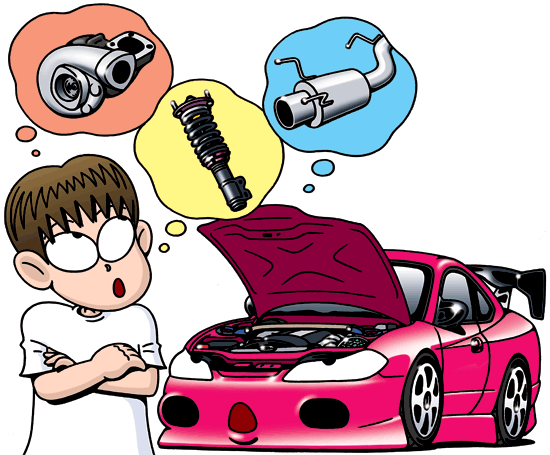

Car tuning is the modification of a car to optimise it for a different set of performance requirements from those it was originally designed to meet. Most commonly this is higher engine performance and dynamic handling characteristics but cars may also be altered to provide better fuel economy, or smoother response. The goal when tuning is the improvement of a vehicle's overall performance in response to the user's needs. Often, tuning is done at the expense of emissions performance, component reliability and occupant comfort.

In the 1970s and 1980s, many Japanese performance cars were never exported outside the Japanese domestic market. In the late 1980s and early 1990s, grey import vehicles of Japanese performance cars, such as the Nissan Skyline, began to be privately imported into Western Europe and North America. In the United States, this was in direct contrast to domestic car production around the same time, where there was a very small performance aftermarket for domestic compact and economy cars; the focus was instead on sports cars or muscle cars such as the Ford Mustang and Chevrolet Corvette.